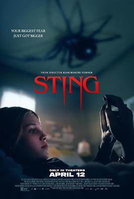

屋中异蛛 / Sting
又名：刺 / 蜘蛛惊(台)
很像《异形》的设定，连下集预告都很像。整个故事发生在一栋有很大通风管道的楼里，由一个童年换过父亲的teen养了个外星生物导致的惨剧。没有很恐怖，适合恐怖片入门新手看。 //上映时间只列了澳大利亚的是在暗示澳洲蜘蛛多嘛
作品信息
| 导演 | 基亚·罗彻-特纳 |
| 编剧 | 基亚·罗彻-特纳 |
| 主演 | 艾莉拉·布朗 / 瑞安·柯尔 / 杰梅因·福勒 / 诺妮·哈泽赫斯 / 罗宾·奈文 / 佩内洛普·米契尔 / 丹尼·金 / 希薇娅·克洛卡 / 托尼·J·布莱克 / 罗兰·福尔摩斯 / 阿尔西拉·卡皮奥 / 凯拉·卡巴纳斯 |
| 类型 | 科幻 / 惊悚 / 恐怖 |
| 制片国家/地区 | 澳大利亚 / 美国 |
| 语言 | 英语 / 西班牙语 |
| 上映日期 | 2024-04-12(澳大利亚) |
| 片长 | 92分钟 |
| IMDb | tt20112746 |
说过什么
2024-05-21 17:58:43
广播 · 看过
很像《异形》的设定，连下集预告都很像。整个故事发生在一栋有很大通风管道的楼里，由一个童年换过父亲的teen养了个外星生物导致的惨剧。没有很恐怖，适合恐怖片入门新手看。 //上映时间只列了澳大利亚的是在暗示澳洲蜘蛛多嘛
2024-05-18 21:46:56
广播 · 想看
上映时间只列了澳大利亚的是在暗示澳洲蜘蛛多嘛
最后一次看到是 2026-08-01T11:04:24+10:00 · 豆瓣原页